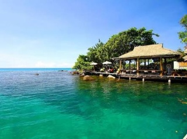

Mice tourizm на острове Ко Куд. Тайланд
Хотите сотрудничество только с благодарными и довольными клиентами? Хотите подарить им первыми райское наслождение? Тогда пригласите их на остров Куд.
Почему Ко Куд?

- Круглый год лето, солнце, фрукты
- Нет пыли,суеты и шума
- Кристально чистое море, самые красивые закаты, белоснежные пляжи, богатая флора и фауна.
- Приветливая и дружелюбная обстановка
- Полная отключка от внешнего мира.
- Возможность размещения от бюджетного до эксклюзивного.
- Отличный спектр развлечений (дайвинг, снорклинг,рыбалка, треккинг,каякинг,посищение водопада,тайский массаж).
- Удобное расположение острова,различные способы трансфера из Бангкока(самолет, такси, автобус,минивэн).
- Безвизовый режим для россиян до 30 дней.
Немного об острове:
 Чем же остров Ко Куд
отличается от остальных
многочисленных островов Таиланда, что
его с каждым годом стремятся посетить
все больше и больше людей? Многие
отвечают просто: «Когда вы приедете на
Ко Куд, то вы поймете все сами». Одним
словом Ко Куд – это место покоя,
созерцания и расслабления, место
восстановления и обновления. Каждый
закат романтичен, красив и не повторим.
Приехав на Ко Куд, Ваши клиенты смогут
отдохнуть и душой и телом,
почувствовать единение с природой,
насладиться ёе чистотой и
первозданностью.Богатый подводный мир
подарит незабываемые впечатления
любителям сноркелинга и дайвинга. На
острове имеется госпиталь, полицейский
участок, государственные школы,
административные учреждения, банк и
банкомат и множество ресторанов
тайской кухни, где Вам могут предложить
свежайшие морепродукты. Без сомнений,
Остров Куд- это отличное место для
организации тренингов,
тимбилдинга,поощерительных поездок,
частных и корпоративных мероприятий,
проведения свадебных церемоний.
Чем же остров Ко Куд
отличается от остальных
многочисленных островов Таиланда, что
его с каждым годом стремятся посетить
все больше и больше людей? Многие
отвечают просто: «Когда вы приедете на
Ко Куд, то вы поймете все сами». Одним
словом Ко Куд – это место покоя,
созерцания и расслабления, место
восстановления и обновления. Каждый
закат романтичен, красив и не повторим.
Приехав на Ко Куд, Ваши клиенты смогут
отдохнуть и душой и телом,
почувствовать единение с природой,
насладиться ёе чистотой и
первозданностью.Богатый подводный мир
подарит незабываемые впечатления
любителям сноркелинга и дайвинга. На
острове имеется госпиталь, полицейский
участок, государственные школы,
административные учреждения, банк и
банкомат и множество ресторанов
тайской кухни, где Вам могут предложить
свежайшие морепродукты. Без сомнений,
Остров Куд- это отличное место для
организации тренингов,
тимбилдинга,поощерительных поездок,
частных и корпоративных мероприятий,
проведения свадебных церемоний.
Кто Я
Креативный, энергичный проффессионал , работающий с фере туризма более 8 лет, знающий историю, культуру и быт Тайланда. Я говорю на тайском и английском языках, так что помочь организовать любое мероприятие не составит для меня сложностей. Находясь на острове Куд более 4 лет, я тщательно изучила его,исследовала каждый красивый уголок и готова познакомить Вас и Ваших партнеров с этим сказочным островом. У меня есть опыт в организации на острове тренингов личностного роста, детских оздоровительных семинаров, свадебных церемоний, йога-туров,научно-исследовательских работ(ознакомление детей с культурой Тайланда), корпоративнного отдыха.
Подарите Вашим партнером кусочек Рая!!!!
фото
